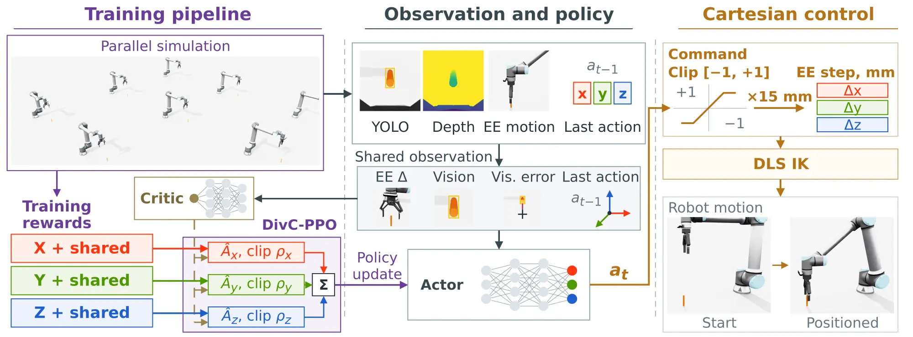
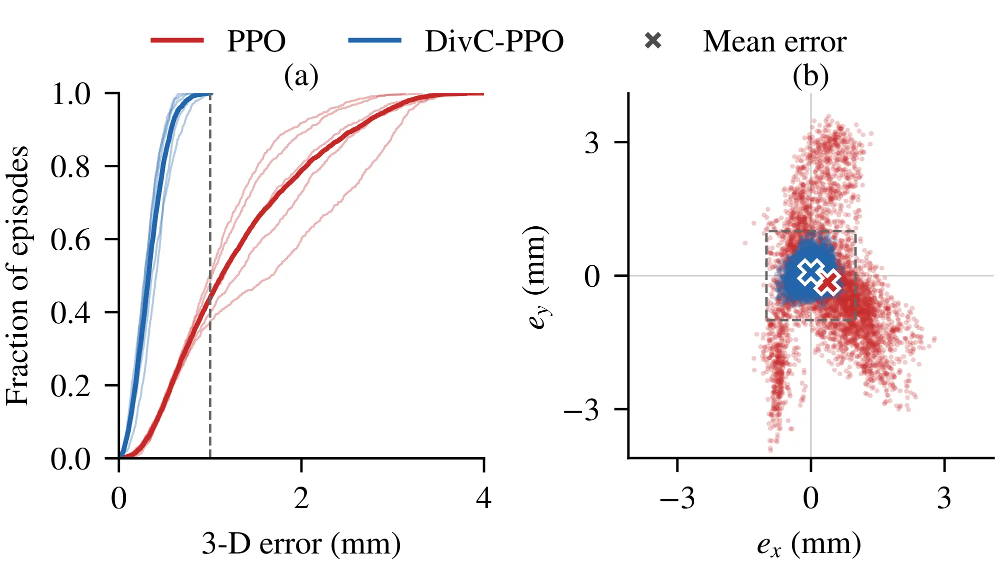

Vision-guided positioning requires converting visual errors into precise Cartesian corrections. Standard PPO assigns one advantage and one probability ratio to the whole action, so the contributions of the X, Y, and Z axes can be mixed during policy optimization. This study presents DivC-PPO, a Cartesian-aligned credit assignment method for PPO that gives each axis its own reward stream, advantage, and clipped probability ratio. The actor and critic use only wrist-camera detection features and proprioception, while training rewards are computed from the simulator state.
On a simulated UR10e positioning task with objects placed within ±4 cm along X and Y, DivC-PPO reaches a 3-D error of 0.337 mm and 100% stable success over three seeds. PPO with the same critic, reward terms, and training budget achieves 1.167 mm and 56.64%. Scrambling the axis mapping prevents learning, showing that the gain depends on the correct correspondence. Replacing the per-axis ratios with a shared ratio raises the error to 0.647 mm. The advantage holds under small detection noise and wider target placement but disappears under larger noise and action-scale mismatch.

Rewards from the simulator state form one stream per Cartesian axis, with task-wide terms copied to all three. One critic value is the baseline for every stream, and the per-axis clipped surrogates are summed into the policy loss. The actor output is clipped to [−1, 1], scaled by 1.5 cm, and converted to joint targets by damped-least-squares inverse kinematics.
Three seeds, 1,024 evaluation episodes each. Both methods use the same critic, reward terms, and training budget.
| Metric | PPO | DivC-PPO |
|---|---|---|
| 3-D error (mm) | 1.167 ± 0.103 | 0.337 ± 0.059 |
| Stable success (%) | 56.64 ± 5.53 | 100.00 ± 0.00 |
| Near-target failure (%) | 41.15 ± 5.22 | 0.00 ± 0.00 |
| Time to stable success (s) | 2.14 ± 0.06 | 1.55 ± 0.03 |
Every DivC-PPO episode ends below 1 mm. PPO fails in the last few millimeters: 41.15% of its episodes are near-target failures.

(a) Cumulative distribution of the 3-D error, dashed line at 1 mm. (b) Final X–Y error of each episode, with the 1 mm box dashed and means as crosses.
One episode with an identical object placement for both policies, played in real time. Each clip stops at the first stable step: 1.57 s for DivC-PPO and 2.17 s for PPO. The cameras look straight along the world axes. In the close-ups, the dashed line is the object axis and the colored line is the gripper axis, so the gap between them is the error that the camera sees.
Front
Side
Close-up from the front: X error
Close-up from the side: Y error
Wrist camera with the YOLO11n box, the visual part of the observation
PPO reaches the target area quickly but keeps hovering just outside the 1 mm box. It is never stable in the 7 s episode and ends at 1.92 mm (X −1.54, Y +1.14 mm). This is the most common PPO failure. Played at 2× speed.
The placement radius is outside the ±4 cm training range. Same placement for both policies in each episode. All views play the 7 s episode at 2× speed. The front and side views show how far the arm has to reach, and the close-ups look along the Y and X axes at the object top. In the close-ups, the dashed line is the object axis and the colored line is the gripper axis, so the gap between them is the error along the axis that the camera sees. The 10 mm bar is scaled from the 15 mm cylinder. From the side, the visible finger is closer to the camera than the object, so there the colored line follows the finger and the bar is scaled to the finger distance (1.65×, fitted on 432 frames). At 14 cm over three seeds, DivC-PPO reaches 1.195 mm and 46.0% stable success, and PPO 12.717 mm and 3.0%.
@inproceedings{putra2026divcppo,
title = {DivC-PPO: Cartesian-Aligned Credit Assignment for
Precision Vision-Guided End-Effector Positioning},
author = {Putra, Aditya Nugraha and Nguyen, Van-Linh},
year = {2026},
note = {To appear}
}